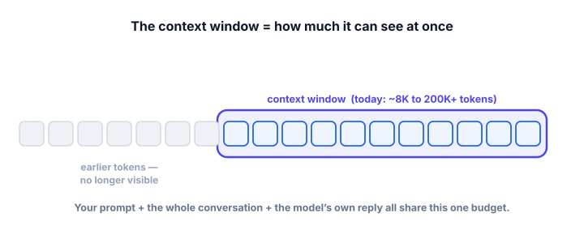
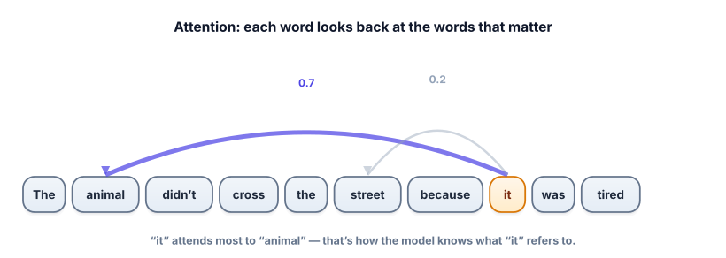

Context windows & attention
Two ideas that decide what your model can actually do in practice: how much it can hold in mind at once (the context window), and how it figures out which of those words matter (attention). Get these and you’ll design prompts and systems that work with the model instead of against it.
Why there’s a limit at all
An LLM has no long-term memory of your conversation and no ability to “open” a file. The only thing it can use is the text you put in front of it right now. That text — everything the model can see in a single step — has a maximum size, measured in tokens. This is the context window. Understanding it explains why long documents need special handling (Track 3), why long chats start “forgetting” the beginning, and why some requests cost far more than others.
The context window is the maximum number of tokens a model can process at once — and crucially, it’s shared by everything: your instructions, any examples, the conversation history, any documents you paste in, and the model’s own response. If a model has a 8,000-token window and your input uses 7,900, there’s only room for ~100 tokens of answer.

Chat assistants feel like they “remember” your conversation. They don’t, internally. Each turn, the app re-sends the entire conversation so far as input. The “memory” is just resent text — and it counts against the window and your bill every single turn. When a long chat gets vague, you’ve often quietly hit the window limit and early messages are being dropped.
The catch with “just use a huge window”
Windows have grown enormously (some models reach hundreds of thousands of tokens). That’s great, but bigger isn’t free:
- Cost. You pay per token. Stuffing 100K tokens of documents into every request is expensive — often needlessly, when only a paragraph was relevant.
- Latency. More tokens to process means slower responses (we’ll quantify this in Track 8).
- “Lost in the middle.” Models reliably use information at the start and end of a long context, but can overlook things buried in the middle. More context can paradoxically mean worse answers.
This is the core motivation for RAG (Track 3): instead of dumping everything in, retrieve only the few relevant chunks and spend your token budget wisely.
How the model uses the context: attention
Within the window, how does the model know that in “The animal didn’t cross the street because it was tired,” the word “it” refers to the animal and not the street? Through attention — the central mechanism of the transformer (the neural-network architecture behind modern LLMs). For each token, attention lets the model look back at the other tokens and decide, with a learned weight, how much each one matters for understanding this token right now.

Two practical consequences fall out of this. First, position matters: the model is sensitive to where things appear, which is why instructions often work best at the very start or very end of a long prompt. Second, attention is what makes the context window so powerful and so costly — every token can attend to every other token, and that all-pairs comparison is the expensive part (see the deep dive).
Context budget calculator
Everything shares one budget. Set the pieces of your request and watch whether the answer still fits. Try a big “retrieved documents” value against a small window — this is exactly the squeeze RAG is designed to relieve.
Before sending a big prompt, you can check its size locally and decide whether to trim or retrieve. No API needed:
!pip install tiktoken
import tiktoken
enc = tiktoken.get_encoding("cl100k_base")
system = "You are a helpful support assistant. Answer only from the context."
context = open_your_document_text # imagine a long string here
question = "How do I export my data?"
prompt = system + context + question
n = len(enc.encode(prompt))
WINDOW, RESERVE_FOR_ANSWER = 8000, 1000
if n + RESERVE_FOR_ANSWER > WINDOW:
print(f"Too big: {n} tokens. Trim or retrieve instead of pasting everything.")
else:
print(f"Fits: {n} tokens, leaving {WINDOW - n} for the answer.")This little guard is the seed of real production logic: measure, then decide whether to send, trim, or retrieve.
Watch attention resolve a pronoun
The context window decides what the model can see; attention decides what it actually uses. Click a highlighted word to see which earlier words it leans on.
- The context window is the max tokens a model handles at once — shared by instructions, history, documents, and the answer.
- Chat “memory” is just the whole conversation re-sent each turn; it costs tokens and can overflow.
- Bigger windows aren’t free: more cost, more latency, and the “lost in the middle” effect — which is why RAG retrieves instead of dumping.
- Attention lets each token weigh how much every other token matters — this is how references and meaning get resolved.
- Position matters: put key instructions where the model reliably looks (start/end), and budget tokens deliberately.
A user has chatted with your assistant for an hour. They say “summarize what we discussed,” but the summary ignores the first 20 minutes. What’s the most likely cause?
1. Your model has a 16,000-token window. Your system prompt is 800 tokens, you want to reserve 2,000 for the answer, and each retrieved document chunk is ~500 tokens. How many chunks can you safely include?
2. Explain why pasting a 200-page manual into one prompt can give worse answers than retrieving the 3 relevant paragraphs.
3. You notice your assistant follows instructions early in a long prompt but ignores ones buried in the middle. Give two fixes.
▸ Show solutions & reasoning
1. Budget left for documents = 16,000 − 800 (system) − 2,000 (answer) = 13,200 tokens. At ~500 tokens/chunk that’s 13,200 ÷ 500 ≈ 26 chunks. In practice leave a safety margin (token estimates aren’t exact), so plan for ~22–24. The habit — subtract the fixed costs first, then divide — is exactly how you size a RAG prompt.
2. Two reasons from this lesson. First, lost in the middle: the relevant passage is now buried among hundreds of pages, where models attend less reliably. Second, signal-to-noise: the model must find the needle while attending over a huge haystack, and irrelevant text can pull its attention. Retrieving the 3 relevant paragraphs puts the signal front and center — usually more accurate and far cheaper.
3. (a) Move the critical instructions to the start or end of the prompt, where models attend most reliably. (b) Shorten the prompt (retrieve less, summarize history) so there’s less to get lost in. A third option: repeat the key instruction at the end as a final reminder.
Here’s a bit more of the machinery, kept intuitive. In self-attention, each token produces three vectors: a query (“what am I looking for?”), a key (“what do I offer?”), and a value (“what I’ll contribute if attended to”). To update a token, the model compares its query against every other token’s key to get attention weights (how relevant each is), then mixes their values according to those weights. That’s how “it” ends up mostly absorbing the “animal” token’s information. Models do this many times in parallel (“multi-head” attention) and stack it in many layers, which is where their depth of understanding comes from.
The cost consequence is important for Track 8. Because every token compares against every other token, the work grows with the square of the sequence length — doubling the context roughly quadruples the attention computation. That’s the deep reason long context is slow and pricey, and why a whole research area exists to make attention cheaper. For now, the engineering takeaway is simple: tokens are a budget, and attention makes long budgets expensive — so spend them on what’s relevant.
You now understand what the model can see and how it reads it. The last piece of the engine is the part you’ll tune most often: once the model produces its probability distribution, how do we choose the next token? That’s sampling and decoding.